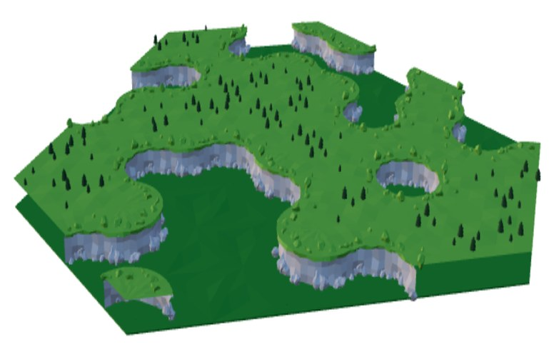
A procedural 3D island built tile by tile with wave function collapse, the same technique games like Bad North use to grow coherent worlds from a small set of hand-modelled pieces.
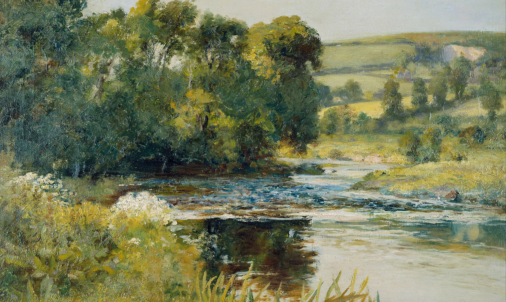
WASHINGTON, DC Currently @ Capital One
I build the layer everything else sits on: design systems, internal platforms, the tools engineers open forty times a day and never think about. Because I write the code and draw the thing, I’m usually the one asking whether we need this component at all and then building it anyway. Off the clock, I paint badly and lose, regularly, to a chess engine I wrote myself.
my cats, lyra & goose,
senior prompt engineers
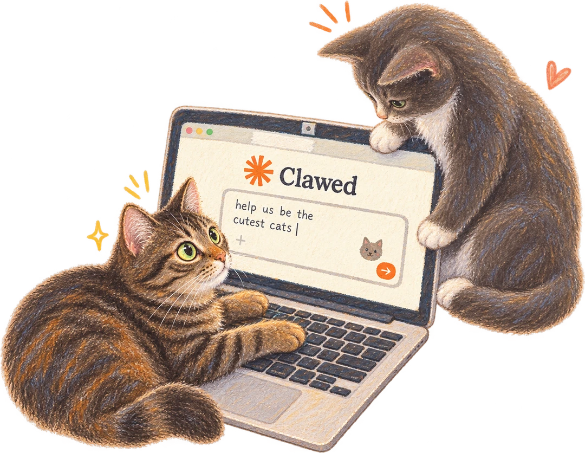
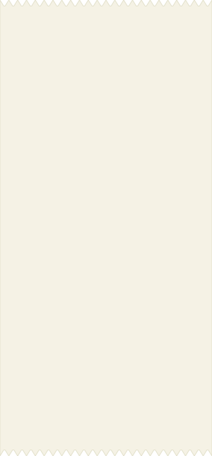
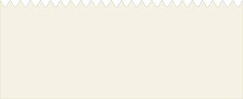
Life imitates art?
•••••••••••••••••••••••••••••••••••••••••••••••••••••••••••••••••••••
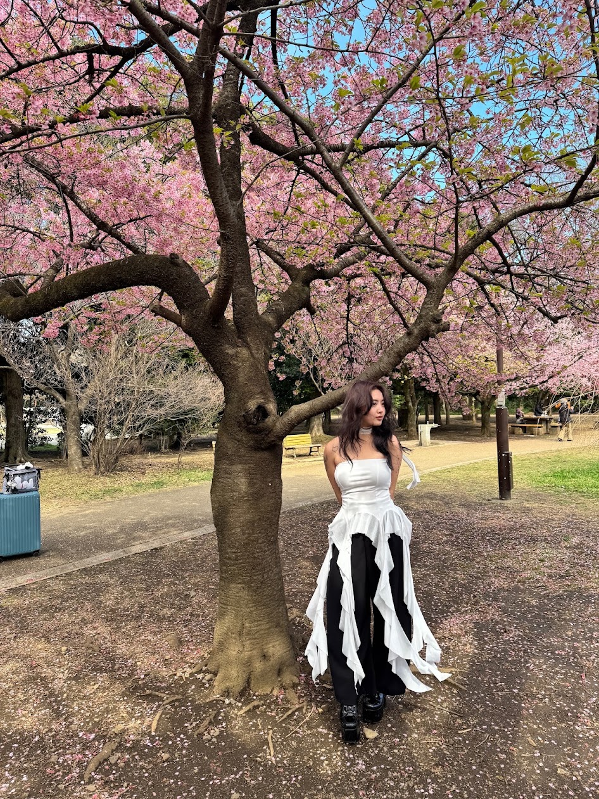
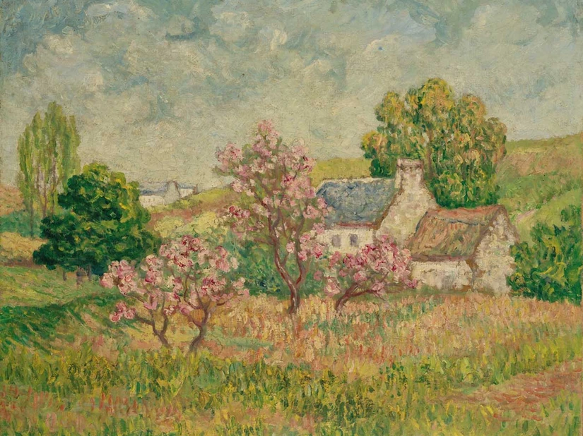
Studio Ghibli Museum
INFO : Mitaka, Tokyo, Mar 2025
•••••••••••••••••••••••••••••••••••••••••••••••••••••••••••••••••••••
Printemps à Pont-Aven
INFO : E. de Chamaillard, 1900
See the work
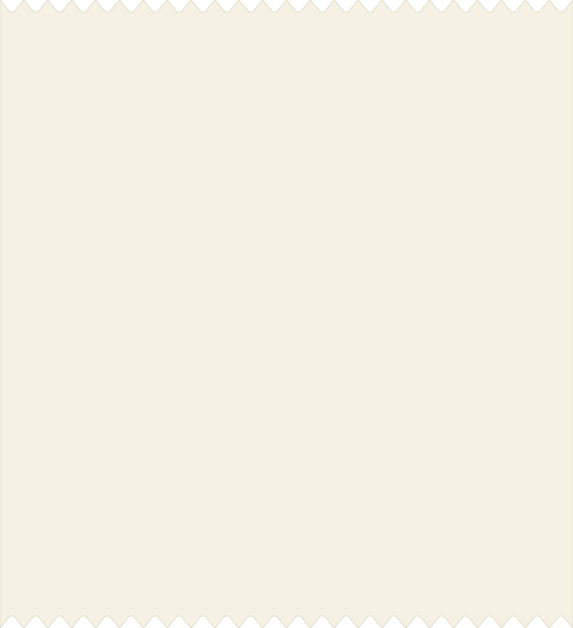
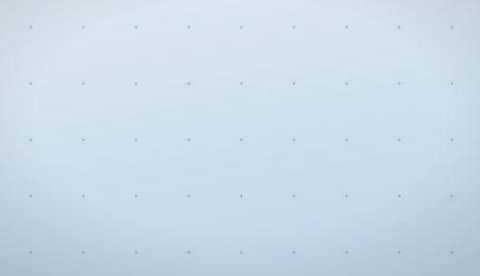
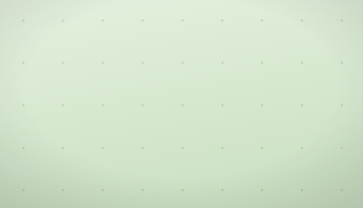
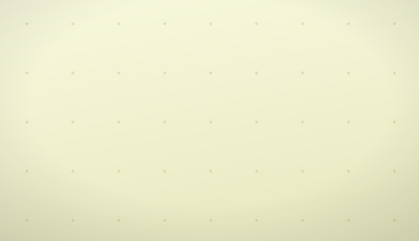
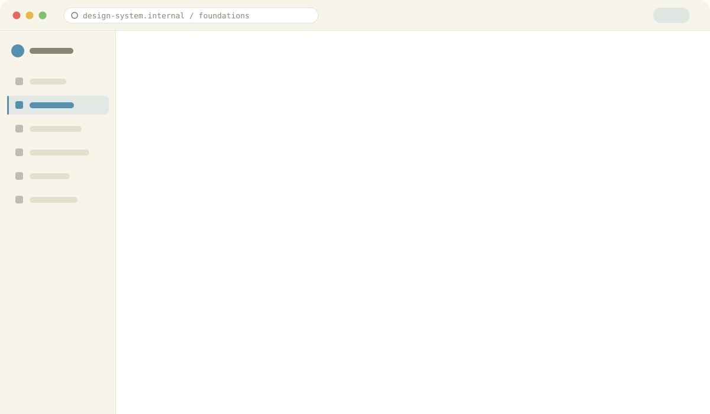
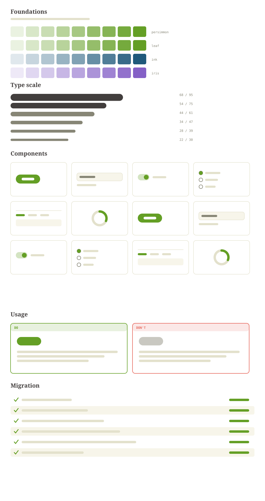
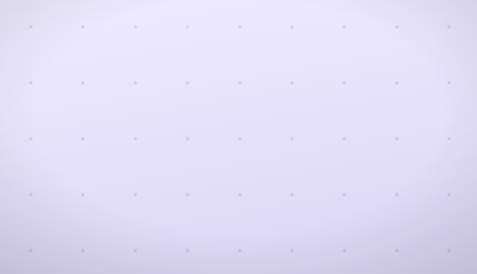
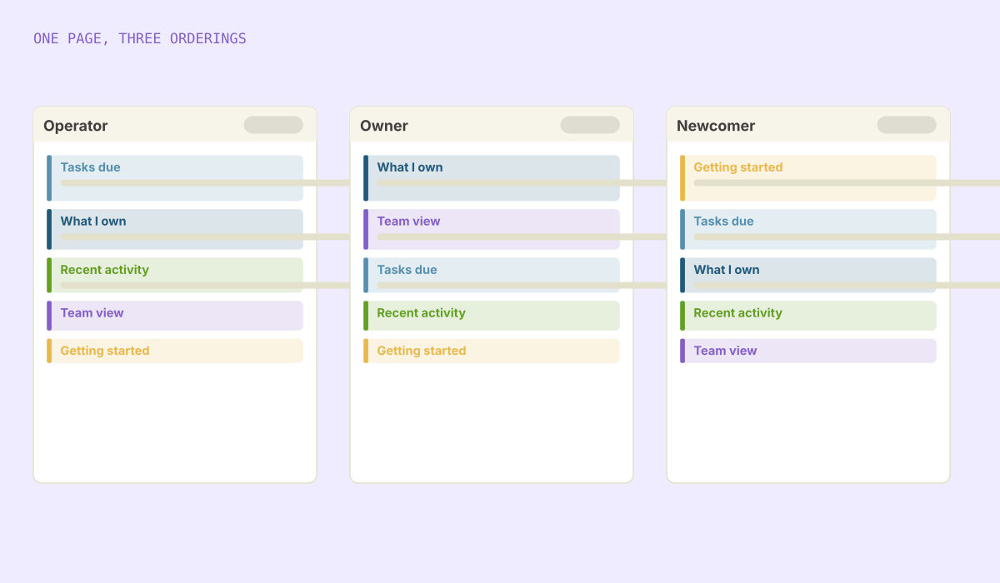

A procedural 3D island built tile by tile with wave function collapse, the same technique games like Bad North use to grow coherent worlds from a small set of hand-modelled pieces.
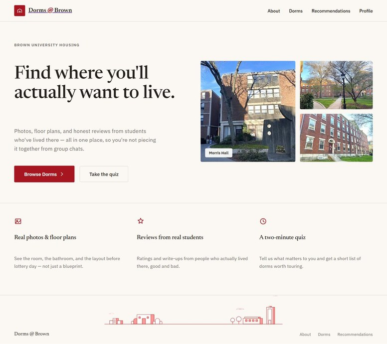
A housing-decision app for the lottery: every dorm on campus with photos, floor plans and peer reviews, plus a quiz that narrows thirty dorms to a shortlist. React, Java and Firebase.
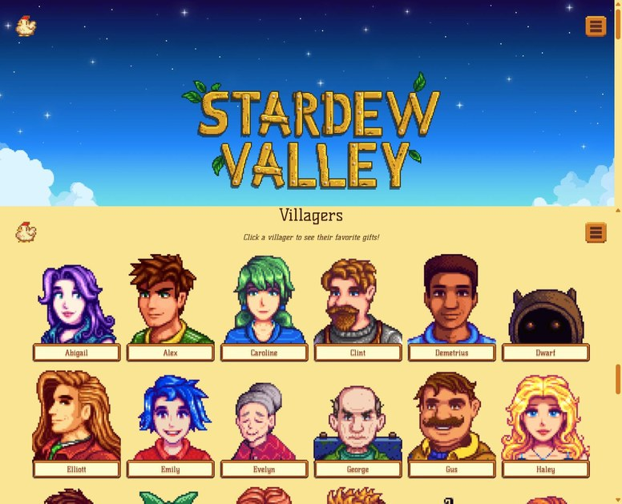
Look up any of the 34 villagers' favourite gifts, click around town to learn what each building does, then play one of four arcade cabinets built into the page. No framework, no build step, no game engine.
An earlier portfolio built around research and process rather than final screenshots: each piece walks through the problem, what was tried, and what actually shipped.
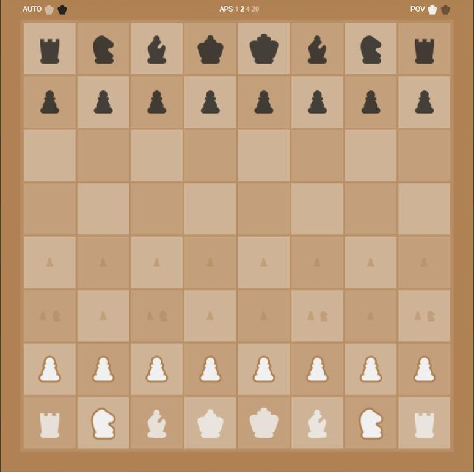
A playable board with an opponent behind it: move generation, alpha-beta search, and an evaluation that is honest about how much it does not know.
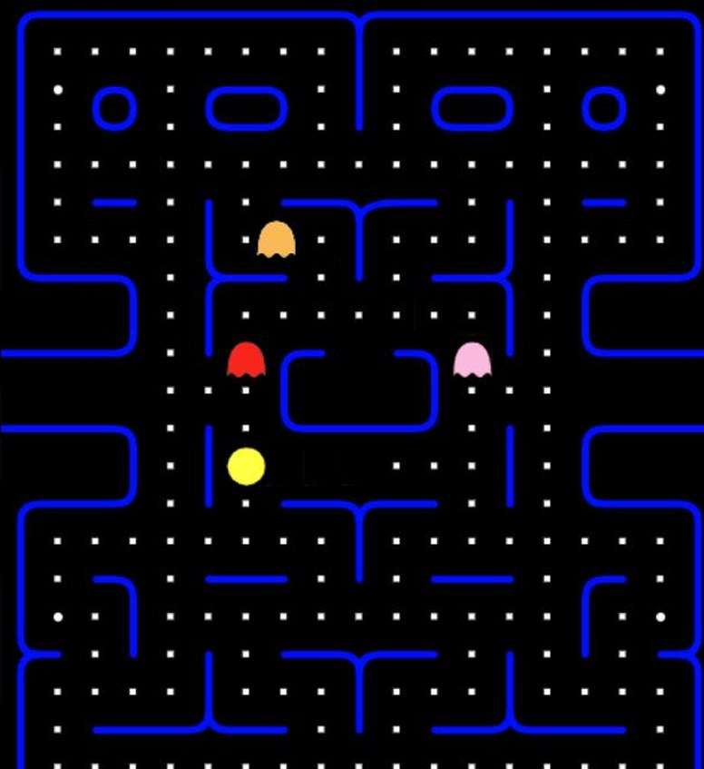
Pac-Man rebuilt in the browser, four ghosts included. They share one movement system and differ only in the tile each one aims at, which is a cheap way to buy four personalities.